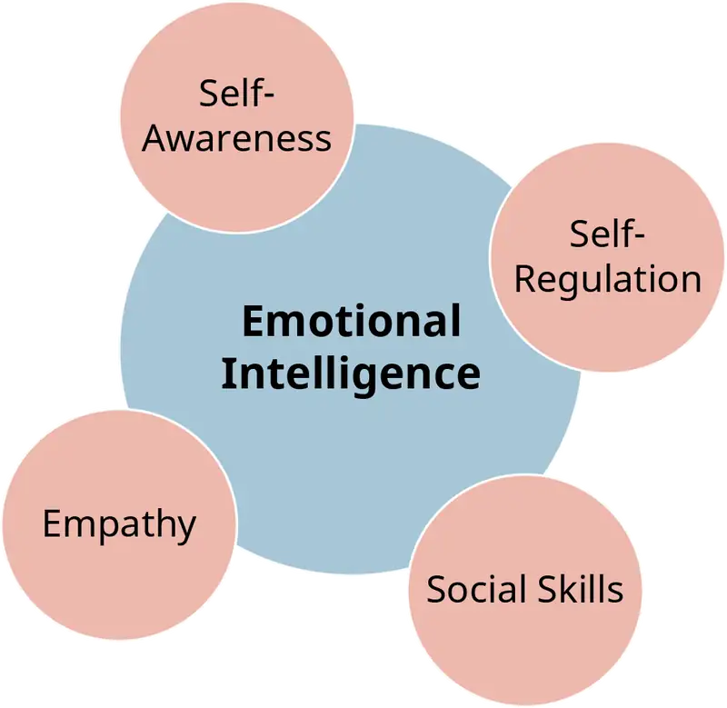
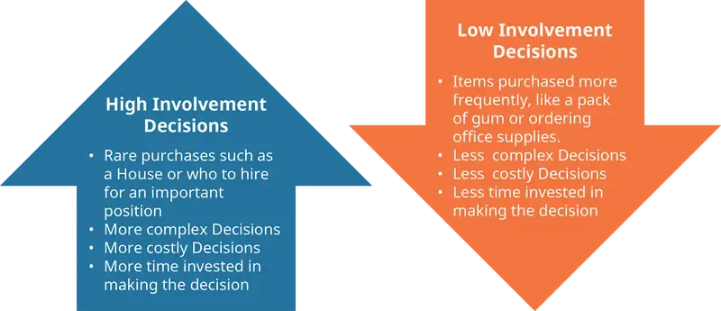
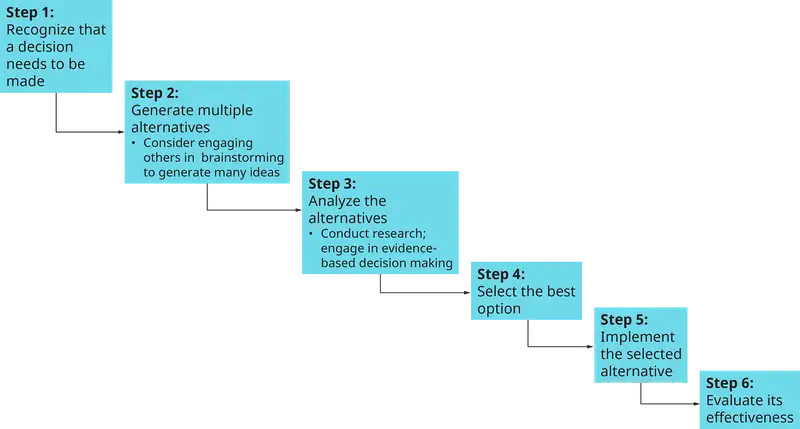
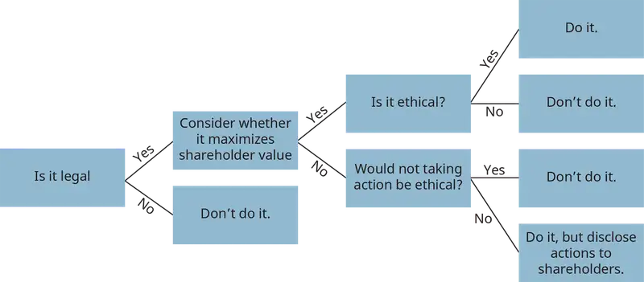

Chapter 2: Managerial Decision-Making¶
Introduction¶
Learning Outcomes
After reading this chapter, you should be able to answer these questions:
- What are the basic characteristics of managerial decision-making?
- What are the two systems of decision-making in the brain?
- What is the difference between programmed and nonprogrammed decisions?
- What barriers exist that make effective decision-making difficult?
- How can a manager improve the quality of her individual decision-making?
- What are the advantages and disadvantages of group decision-making, and how can a manager improve the quality of group decision-making?
Exploring Managerial Careers: Up, Up, and Away: How Stephanie Korey and Jen Rubio founded their luggage company
Jen Rubio and Stephanie Korey faced a number of important decisions in starting their luggage company, Away—beginning with the decision to start a business! That decision came about after Rubio’s luggage broke on a trip. She found it frustrating that all the luggage options were either inexpensive ($100 or less) but low quality, or high quality but incredibly expensive ($400 and above). There was no midrange option. So in 2015 Rubio and her friend Stephanie Korey began researching the luggage industry. They found that much of the reason for the high prices on quality luggage was because of how it was distributed and sold, through specialty retail shops and department stores. If they opted instead for a model in which they sold directly to consumers, they could provide high-quality luggage at more of a midrange ($200-$300) price. After considerable research, the two were convinced that they had an idea worth pursuing. Rubio and Korey settled on the company name “Away,” which is intended to invoke the pleasure that comes from travelling.
Both of the founders had prior experience working for a start-up in the e-commerce space (Warby Parker), which helped them with making sound choices. Rubio’s background was more in branding and marketing, while Korey’s was in operations and supply chain management—so each was able to bring great expertise to various aspects of the business. They raised money initially from friends and family, but within a few months they sought venture capital funding to ensure that they had enough money to get off to a successful start.
A big decision that Rubio and Korey had to make fairly early in the process of establishing their business was to settle on an initial design for the product. This decision required extensive marketing and consumer research to understand customer needs and wants. They asked hundreds of people what they liked about their existing luggage, and what they found most irritating about their existing luggage. They also contracted with a two-person design team to help create the first prototype. This research and development ultimately led to the design of an attractive hard case that is surprisingly lightweight. It also boasts extremely high-quality wheels (four of them, not two) and high-quality zippers. As a bonus, the carry-on includes a built-in battery for charging phones and other devices.
The two founders also had to choose a partner to manufacture their product. Because their product had a hard, polycarbonate shell, Rubio and Korey discovered that manufacturing in the United States was not a viable option—the vast majority of luggage manufacturers using a polycarbonate shell were based in Asia. They researched a number of possible business partners and asked lots of questions. In addition, they eventually visited all of the factories on their list of options to see what they were actually like. This was an important piece of research, because the companies that looked best on paper didn’t always turn out to be the best when they visited in person. Rubio and Korey ended up working with a manufacturing partner in China that also produces luggage for many high-end brands, and they have been extremely pleased with the partnership. They continue to devote time to building and maintaining that relationship, which helps to avoid issues and problems that might otherwise come up.
By the end of 2015, Rubio and Korey had developed their first product. Because the luggage was not going to be available in time for the holiday shopping season, they decided to allow customers to preorder the luggage. To drum up interest, the duo engaged in a unique storytelling effort. They interviewed 40 well-respected members of the creative community about their travel experiences and created a hardcover book of travel memoirs called The Places We Return To. Not only was the book interesting and engaging, it also made lots of people in the creative community aware of Away luggage. Starting in November 2015, the travel memoir book was available for free with the purchase of a gift card that could be redeemed in February 2016 for luggage. The book project generated tremendous advance interest in the product, and the 1,200 printed copies sold out. Away generated $12 million in first-year sales.
Stephanie Corey and Jen Rubio faced many important and novel decisions in initially developing and building their business. They have been successful in part because they made those decisions wisely—by relying on shared knowledge, expertise, and lots of research before reaching a decision. They will continue to face many decisions, big and small. They have expanded their product line from one piece of luggage to four, with more luggage—and other travel accessories—in the works for the future. Their company, which is based in New York, has grown to over 60 employees in the first two years. These employees include the two design-team members who were contracted to help create their first prototype; Rubio and Korey appreciated working with them so much, they offered them full-time positions with Away. Each new hire represents new decisions—decisions about what additional work needs to be done and who they should hire to do it. Each new product also brings additional decisions—but it seems Rubio and Korey have positioned themselves (and their business) well for future successes.
Sources: Kendall Baker, “An Interview With the Co-Founder of Away,” The Hustle, December 5, 2016, https://thehustle.co/episodes; Bond Street Blog, “Up and Away,” Bond Street, https://bondstreet.com/blog/jen-rubio-interview/; Josh Constine, “Away nears 100k stylish suitcases sold as it raises $20M,” TechCrunch, May 19, 2017, https://techcrunch.com/; Adeline Duff, “ The T&L Carry-On: Away Travel Co-Founders Jen Rubio and Stephanie Korey,” Travel & Leisure, March 9, 2017, http://www.travelandleisure.com/; Burt Helm, “How This Company Launched With Zero Products –and Hit $12 Million in First-Year Sales,” Inc.com, July/August 2017, https://www.inc.com/; Veronique Hyland, “The Duo Trying to Make Travel More Glamorous,” The Cut, December 22, 2015, https://www.thecut.com/.
Managers and business owners—like Jen Rubio and Stephanie Korey—make decisions on a daily basis. Some are big, like the decision to start a new business, but most are smaller decisions that go into the regular running of the company and are crucial to its long-term success. Some decisions are predictable, and some are unexpected. In this chapter we look at important information about decision-making that can help you make better decisions and, ultimately, be a better manager.
2.1 Overview of Managerial Decision-Making¶
- What are the basic characteristics of managerial decision-making?
Decision-making is the action or process of thinking through possible options and selecting one.
It is important to recognize that managers are continually making decisions, and that the quality of their decision-making has an impact—sometimes quite significant—on the effectiveness of the organization and its stakeholders. Stakeholders are all the individuals or groups that are affected by an organization (such as customers, employees, shareholders, etc.).
Members of the top management team regularly make decisions that affect the future of the organization and all its stakeholders, such as deciding whether to pursue a new technology or product line. A good decision can enable the organization to thrive and survive long-term, while a poor decision can lead a business into bankruptcy. Managers at lower levels of the organization generally have a smaller impact on the organization’s survival, but can still have a tremendous impact on their department and its workers. Consider, for example, a first-line supervisor who is charged with scheduling workers and ordering raw materials for her department. Poor decision-making by lower-level managers is unlikely to drive the entire firm out of existence, but it can lead to many adverse outcomes such as:
- reduced productivity if there are too few workers or insufficient supplies,
- increased expenses if there are too many workers or too many supplies, particularly if the supplies have a limited shelf life or are costly to store, and
- frustration among employees, reduced morale, and increased turnover (which can be costly for the organization) if the decisions involve managing and training workers.
Deciding When to Decide¶
While some decisions are simple, a manager’s decisions are often complex ones that involve a range of options and uncertain outcomes. When deciding among various options and uncertain outcomes, managers need to gather information, which leads them to another necessary decision: how much information is needed to make a good decision? Managers frequently make decisions without complete information; indeed, one of the hallmarks of an effective leader is the ability to determine when to hold off on a decision and gather more information, and when to make a decision with the information at hand. Waiting too long to make a decision can be as harmful for the organization as reaching a decision too quickly. Failing to react quickly enough can lead to missed opportunities, yet acting too quickly can lead to organizational resources being poorly allocated to projects with no chance of success. Effective managers must decide when they have gathered enough information and must be prepared to change course if additional information becomes available that makes it clear that the original decision was a poor one. For individuals with fragile egos, changing course can be challenging because admitting to a mistake can be harder than forging ahead with a bad plan. Effective managers recognize that given the complexity of many tasks, some failures are inevitable. They also realize that it’s better to minimize a bad decision’s impact on the organization and its stakeholders by recognizing it quickly and correcting it.
What’s the Right (Correct) Answer?¶
It’s also worth noting that making decisions as a manager is not at all like taking a multiple-choice test: with a multiple-choice test there is always one right answer. This is rarely the case with management decisions. Sometimes a manager is choosing between multiple good options, and it’s not clear which will be the best. Other times there are multiple bad options, and the task is to minimize harm. Often there are individuals in the organization with competing interests, and the manager must make decisions knowing that someone will be upset no matter what decision is reached.
What’s the Right (Ethical) Answer?¶
Sometimes managers are asked to make decisions that go beyond just upsetting someone—they may be asked to make decisions in which harm could be caused to others. These decisions have ethical or moral implications. Ethics and morals refer to our beliefs about what is right vs. wrong, good vs. evil, virtuous vs. corrupt. Implicitly, ethics and morals relate to our interactions with and impact on others—if we never had to interact with another creature, we would not have to think about how our behaviors affected other individuals or groups. All managers, however, make decisions that impact others. It is therefore important to be mindful about whether our decisions have a positive or a negative impact. “Maximizing shareholder wealth” is often used as a rationalization for placing the importance of short-term profits over the needs of others who will be affected by a decision—such as employees, customers, or local citizens (who might be affected, for example, by environmental decisions). Maximizing shareholder wealth is often a short-sighted decision, however, because it can harm the organization’s financial viability in the future. Bad publicity, customers boycotting the organization, and government fines are all possible long-term outcomes when managers make choices that cause harm in order to maximize shareholder wealth. More importantly, increasing the wealth of shareholders is not an acceptable reason for causing harm to others.
As you can see from these brief examples, management is not for the faint of heart! It can, however, be incredibly rewarding to be in a position to make decisions that have a positive impact on an organization and its stakeholders. We see a great example of this in the Sustainability and Responsible Management box.
Brewing Sustainable Success
The focus of a manager or a business owner is often primarily on doing well (making a profit). Sometimes, though, organizational leaders choose to pursue two big goals at once: doing well, and simultaneously doing good (benefiting society in some way). Why? Generally because they think it’s an important thing to do. The business provides an opportunity to pursue another goal that the founders, owners, or managers are also passionate about. In the case of New Belgium Brewing, the company’s cofounders, Jeff Lebesch and Kim Jordan, were passionate about two things: making great beer and environmental stewardship. So it should come as no surprise that their brewery is dedicated to reducing its environmental footprint. The brewery has created a culture that fosters sustainability in a wide range of ways, such as by giving employees a bicycle on their one-year anniversary as a way to encourage them to ride bicycles to work. The organization is also active in advocacy efforts, such as the “Save the Colorado” (river) campaign, and it works hard to promote responsible decision-making when it comes to environmental issues. In fact, in 1999, following an employee vote, the brewery began to purchase all of its electricity from wind power, even though it was more expensive than electricity from coal-burning power plants (which meant reduced profitability and less money for employee bonuses).
While the brewery still relies primarily on wind power, it also now generates a portion of its electricity onsite—some from rooftop solar panels, and even more from biogas, the methane gas byproduct that is created by microbes in the brewery’s water treatment plant. The company cleans the wastewater generated from beer production, and in doing so it generates the biogas, which is captured and used for energy to help run the brewery.
Brewing is water intensive, so New Belgium works hard to reduce water consumption and to recycle the water that it does use. The company also reduces other types of waste by selling used grain, hops, and yeast to local ranchers for cattle feed. The company, which has been employee owned since 2013, also works with the local utility through a Smart Meter program to reduce their energy consumption at peak times.
All of these efforts at doing good must come at a cost, right? Actually, research shows that companies that are committed to sustainability have superior financial performance, on average, relative to those that are not. In coming up with creative ways to reduce, reuse, and recycle, employees often also find ways to save money (like using biogas). In addition, organizations that strive to do good are often considered attractive and desirable places to work (especially by people who have similar values) and are also valued by the surrounding communities. As a result, employees in those organizations tend to be extremely committed to them, with high levels of engagement, motivation, and productivity. Indeed, it seems clear that the employees at the New Belgium Brewery are passionate about where they work and what they do. This passion generates value for the organization and proves that it is, in fact, possible to do well while having also made the decision to do good. And in the case of New Belgium Brewery, that means working to protect the environment while also making delicious beer.
Discussion Questions
- What challenges does New Belgium Brewery face in pursuing environmental goals?
- Can you think of any other examples of companies that try to “do good” while also doing well?
- Would you like to work for an organization that is committed to something more than just profitability, even if it meant your salary or bonus would be smaller?
Sources: Karen Crofton, “How New Belgium Brewery leads Colorado’s craft brewers in energy,” GreenBiz, August 1, 2014, https://www.greenbiz.com/. Darren Dahl, “How New Belgium Brewing Has Found Sustainable Success,” Forbes, February 8, 2016, https://www.forbes.com/. Jenny Foust, “New Belgium Brewing Once Again Named Platinum-Level Bicycle Friendly Business by the League of American Bicyclists,” Craft Beer.com, February 18, 2016. Robert G. Eccles, Ioannis Ioannou, & George Serafeim, “The Impact of Corporate Sustainability on Organizational Processes and Performance,” Management Science, 60, 2014, https://doi.org/10.1287/mnsc.2014.1984. New Belgium Brewery Sustainability web page, http://www.newbelgium.com/sustainability, accessed September 18, 2017.
Concept Check
What are some positive outcomes of decision-making for an organization? What are some possible negative outcomes?
How is managerial decision-making different from a multiple-choice test?
In addition to the owners of a business, who are some of the other stakeholders that managers should consider when making decisions?
2.2 How the Brain Processes Information to Make Decisions: Reflective and Reactive Systems¶
- What are the two systems of decision-making in the brain?
The human brain processes information for decision-making using one of two routes: a reflective system and a reactive (or reflexive) system., The reflective system is logical, analytical, deliberate, and methodical, while the reactive system is quick, impulsive, and intuitive, relying on emotions or habits to provide cues for what to do next. Research in neuropsychology suggests that the brain can only use one system at a time for processing information [Darlow & Sloman] and that the two systems are directed by different parts of the brain. The prefrontal cortex is more involved in the reflective system, and the basal ganglia and amygdala (more primitive parts of the brain, from an evolutionary perspective) are more involved in the reactive system.
Reactive Decision-Making¶
We tend to assume that the logical, analytical route leads to superior decisions, but whether this is accurate depends on the situation. The quick, intuitive route can be lifesaving; when we suddenly feel intense fear, a fight-or-flight response kicks in that leads to immediate action without methodically weighing all possible options and their consequences. Additionally, experienced managers can often make decisions very quickly because experience or expertise has taught them what to do in a given situation. These managers might not be able to explain the logic behind their decision, and will instead say they just went with their “gut,” or did what “felt” right. Because the manager has faced a similar situation in the past and has figured out how to deal with it, the brain shifts immediately to the quick, intuitive decision-making system.
Reflective Decision-Making¶
The quick route is not always the best decision-making path to take, however. When faced with novel and complex situations, it is better to process available information logically, analytically, and methodically. As a manager, you need to think about whether a situation requires not a fast, “gut” reaction, but some serious thought prior to making a decision. It is especially important to pay attention to your emotions, because strong emotions can make it difficult to process information rationally. Successful managers recognize the effects of emotions and know to wait and address a volatile situation after their emotions have calmed down. Intense emotions—whether positive or negative—tend to pull us toward the quick, reactive route of decision-making. Have you ever made a large “impulse” purchase that you were excited about, only to regret it later? This speaks to the power our emotions exert on our decision-making. Big decisions should generally not be made impulsively, but reflectively.
The Role of Emotions¶
Being aware of the role emotions play in decision-making does not mean that we should ignore them. Emotions can serve as powerful signals about what we should do, especially in situations with ethical implications. You can read more about this particular type of decision-making in the Ethics in Practice box later in this chapter. Thinking through how we feel about the possible options, and why we feel that way, can greatly enhance our decision-making. Effective decision-making, then, relies on both logic and emotions. For this reason, the concept of emotional intelligence has become popular as a characteristic of effective managers. Emotional intelligence is the ability to recognize, understand, pay attention to, and manage one’s own emotions and the emotions of others. It involves self-awareness and self-regulation—essentially, this is a toggling back and forth between emotions and logic so that we analyze and understand our own emotions and then exert the necessary control to manage them as appropriate for the situation. Emotional intelligence also involves empathy—the ability to understand other peoples’ emotions (and an interest in doing so). Finally, emotional intelligence involves social skills to manage the emotional aspects of relationships with others. Managers who are aware of their own emotions can think through what their emotions mean in a given situation and use that information to guide their decision-making. Managers who are aware of the emotions of others can also utilize that information to help groups function more effectively and engage in better group decision-making. While emotional intelligence seems to come easily to some people, it is something that we can develop and improve on with practice. A model of emotional intelligence is presented in Figure 2.2.

Concept Check
Explain the two systems used by the brain in decision-making.
What is emotional intelligence, and why is it important for decision-making?
2.3 Programmed and Nonprogrammed Decisions¶
- What is the difference between programmed and nonprogrammed decisions?
Because managers have limited time and must use that time wisely to be effective, it is important for them to distinguish between decisions that can have structure and routine applied to them (called programmed decisions) and decisions that are novel and require thought and attention (nonprogrammed decisions).
Programmed Decisions¶
Programmed decisions are those that are repeated over time and for which an existing set of rules can be developed to guide the process. These decisions might be simple, or they could be fairly complex, but the criteria that go into making the decision are all known or can at least be estimated with a reasonable degree of accuracy. For example, deciding how many raw materials to order should be a programmed decision based on anticipated production, existing stock, and anticipated length of time for the delivery of the final product. As another example, consider a retail store manager developing the weekly work schedule for part-time employees. The manager must consider how busy the store is likely to be, taking into account seasonal fluctuations in business. Then, they must consider the availability of the workers by taking into account requests for vacation and for other obligations that employees might have (such as school). Establishing the schedule might be complex, but it is still a programmed decision: it is made on a regular basis based on well-understood criteria, so structure can be applied to the process. For programmed decisions, managers often develop heuristics, or mental shortcuts, to help reach a decision. For example, the retail store manager may not know how busy the store will be the week of a big sale, but might routinely increase staff by 30% every time there is a big sale (because this has been fairly effective in the past). Heuristics are efficient—they save time for the decision maker by generating an adequate solution quickly. Heuristics don’t necessarily yield the optimal solution—deeper cognitive processing may be required for that. However, they generally yield a good solution. Heuristics are often used for programmed decisions, because experience in making the decision over and over helps the decision maker know what to expect and how to react. Programmed decision-making can also be taught fairly easily to another person. The rules and criteria, and how they relate to outcomes, can be clearly laid out so that a good decision can be reached by the new decision maker. Programmed decisions are also sometimes referred to as routine or low-involvement decisions because they don’t require in-depth mental processing to reach a decision. High- and low-involvement decisions are illustrated in Figure 2.3.

Nonprogrammed Decisions¶
In contrast, nonprogrammed decisions are novel, unstructured decisions that are generally based on criteria that are not well-defined. With nonprogrammed decisions, information is more likely to be ambiguous or incomplete, and the decision maker may need to exercise some thoughtful judgment and creative thinking to reach a good solution. These are also sometimes referred to as nonroutine decisions or as high-involvement decisions because they require greater involvement and thought on the part of the decision maker. For example, consider a manager trying to decide whether or not to adopt a new technology. There will always be unknowns in situations of this nature. Will the new technology really be better than the existing technology? Will it become widely accepted over time, or will some other technology become the standard? The best the manager can do in this situation is to gather as much relevant information as possible and make an educated guess as to whether the new technology will be worthwhile. Clearly, nonprogrammed decisions present the greater challenge.
The Decision-Making Process¶
While decisions makers can use mental shortcuts with programmed decisions, they should use a systematic process with nonprogrammed decisions. The decision-making process is illustrated in Figure 2.4 and can be broken down into a series of six steps, as follows:
- Recognize that a decision needs to be made.
- Generate multiple alternatives.
- Analyze the alternatives.
- Select an alternative.
- Implement the selected alternative.
- Evaluate its effectiveness.
While these steps may seem straightforward, individuals often skip steps or spend too little time on some steps. In fact, sometimes people will refuse to acknowledge a problem (Step 1) because they aren’t sure how to address it. We’ll discuss the steps more later in the chapter, when we review ways to improve the quality of decision-making.

You may notice similarities between the two systems of decision-making in our brains and the two types of decisions (programmed and nonprogrammed). Nonprogrammed decisions will generally need to be processed via the reflective system in our brains in order for us to reach a good decision. But with programmed decisions, heuristics can allow decision makers to switch to the quick, reactive system and then move along quickly to other issues.
Concept Check
Give an example of a programmed decision that a manager might face.
Give an example of a nonprogrammed decision.
What are heuristics, and when are they helpful?
How are programmed and nonprogrammed decisions connected to the reflective and reactive systems in the brain?
2.4 Barriers to Effective Decision-Making¶
- What barriers exist that make effective decision-making difficult?
There are a number of barriers to effective decision-making. Effective managers are aware of these potential barriers and try to overcome them as much as possible.
Bounded Rationality¶
While we might like to think that we can make completely rational decisions, this is often unrealistic given the complex issues faced by managers. Nonrational decision-making is common, especially with nonprogrammed decisions. Since we haven’t faced a particular situation previously, we don’t always know what questions to ask or what information to gather. Even when we have gathered all the possible information, we may not be able to make rational sense of all of it, or to accurately forecast or predict the outcomes of our choice. Bounded rationality is the idea that for complex issues we cannot be completely rational because we cannot fully grasp all the possible alternatives, nor can we understand all the implications of every possible alternative. Our brains have limitations in terms of the amount of information they can process. Similarly, as was alluded to earlier in the chapter, even when managers have the cognitive ability to process all the relevant information, they often must make decisions without first having time to collect all the relevant data—their information is incomplete.
Escalation of Commitment¶
Given the lack of complete information, managers don’t always make the right decision initially, and it may not be clear that a decision was a bad one until after some time has passed. For example, consider a manager who had to choose between two competing software packages that her organization will use on a daily basis to enhance efficiency. She initially chooses the product that was developed by the larger, more well-established company, reasoning that they will have greater financial resources to invest in ensuring that the technology is good. However, after some time it becomes clear that the competing software package is going to be far superior. While the smaller company’s product could be integrated into the organization’s existing systems at little additional expense, the larger company’s product will require a much greater initial investment, as well as substantial ongoing costs for maintaining it. At this point, however, let’s assume that the manager has already paid for the larger company’s (inferior) software. Will she abandon the path that she’s on, accept the loss on the money that’s been invested so far, and switch to the better software? Or will she continue to invest time and money into trying to make the first product work? Escalation of commitment is the tendency of decision makers to remain committed to poor decision, even when doing so leads to increasingly negative outcomes. Once we commit to a decision, we may find it difficult to reevaluate that decision rationally. It can seem easier to “stay the course” than to admit (or to recognize) that a decision was poor. It’s important to acknowledge that not all decisions are going to be good ones, in spite of our best efforts. Effective managers recognize that progress down the wrong path isn’t really progress, and they are willing to reevaluate decisions and change direction when appropriate.
Time Constraints¶
Managers often face time constraints that can make effective decision-making a challenge. When there is little time available to collect information and to rationally process it, we are much less likely to make a good nonprogrammed decision. Time pressures can cause us to rely on heuristics rather than engage in deep processing. While heuristics save time, however, they don’t necessarily lead to the best possible solution. The best managers are constantly assessing the risks associated with acting too quickly against those associated with not acting quickly enough.
Uncertainty¶
In addition, managers frequently make decisions under conditions of uncertainty—they cannot know the outcome of each alternative until they’ve actually chosen that alternative. Consider, for example, a manager who is trying to decide between one of two possible marketing campaigns. The first is more conservative but is consistent with what the organization has done in the past. The second is more modern and edgier, and might bring much better results . . . or it might be a spectacular failure. The manager making the decision will ultimately have to choose one campaign and see what happens, without ever knowing what the results would have been with the alternate campaign. That uncertainty can make it difficult for some managers to make decisions, because committing to one option means forgoing other options.
Personal Biases¶
Our decision-making is also limited by our own biases. We tend to be more comfortable with ideas, concepts, things, and people that are familiar to us or similar to us. We tend to be less comfortable with that which is unfamiliar, new, and different. One of the most common biases that we have, as humans, is the tendency to like other people who we think are similar to us (because we like ourselves). While these similarities can be observable (based on demographic characteristics such as race, gender, and age), they can also be a result of shared experiences (such as attending the same university) or shared interests (such as being in a book club together). This “similar to me” bias and preference for the familiar can lead to a variety of problems for managers: hiring less-qualified applicants because they are similar to the manager in some way, paying more attention to some employees’ opinions and ignoring or discounting others, choosing a familiar technology over a new one that is superior, sticking with a supplier that is known over one that has better quality, and so on.
It can be incredibly difficult to overcome our biases because of the way our brains work. The brain excels at organizing information into categories, and it doesn’t like to expend the effort to re-arrange once the categories are established. As a result, we tend to pay more attention to information that confirms our existing beliefs and less attention to information that is contrary to our beliefs, a shortcoming that is referred to as confirmation bias.
In fact, we don’t like our existing beliefs to be challenged. Such challenges feel like a threat, which tends to push our brains towards the reactive system and prevent us from being able to logically process the new information via the reflective system. It is hard to change people’s minds about something if they are already confident in their convictions. So, for example, when a manager hires a new employee who they really like and are convinced is going to be excellent, they will tend to pay attention to examples of excellent performance and ignore examples of poor performance (or attribute those events to things outside the employee’s control). The manager will also tend to trust that employee and therefore accept their explanations for poor performance without verifying the truth or accuracy of those statements. The opposite is also true; if we dislike someone, we will pay attention to their negatives and ignore or discount their positives. We are less likely to trust them or believe what they say at face value. This is why politics tend to become very polarized and antagonistic within a two-party system. It can be very difficult to have accurate perceptions of those we like and those we dislike. The effective manager will try to evaluate situations from multiple perspectives and gather multiple opinions to offset this bias when making decisions.
Conflict¶
Finally, effective decision-making can be difficult because of conflict. Most individuals dislike conflict and will avoid it when possible. However, the best decision might be one that is going to involve some conflict. Consider a manager who has a subordinate who is often late to work, causing others to have to step away from their responsibilities in order to cover for the late employee. The manager needs to have a conversation with that employee to correct the behavior, but the employee is not going to like the conversation and may react in a negative way. Both of them are going to be uncomfortable. The situation is likely to involve conflict, which most people find stressful. Yet, the correct decision is still to have the conversation even if (or especially if) the employee otherwise is an asset to the department.
If the bad behavior is not corrected, it will continue, which is going to cause more problems in the workplace in the long run. Other employees may recognize that this behavior is allowed, and they may also start coming to work late or engaging in other negative behaviors. Eventually, some employees may become sufficiently frustrated that they look for another place to work. It’s worth noting that in this situation, the best employees will find new jobs the most quickly. It’s important for managers to recognize that while conflict can be uncomfortable (especially in the short-term), there are times when it is necessary for the group, department, or organization to function effectively in the long run.
It is also helpful to think about conflict in terms of process conflict or relationship conflict. Process conflict, conflict about the best way to do something, can actually lead to improved performance, as individuals explore various options together in order to identify superior solutions. Relationship conflict is conflict between individuals that is more personal and involves attacks on a person rather than an idea. This kind of conflict is generally harmful and should be quelled when possible. The harm from relationship conflict arises at least in part because feeling personally attacked will cause an individual to revert to the reactive system of the brain.
Effective managers should be particularly aware of the possibility of relationship conflict when giving feedback and should keep feedback focused on behaviors and activities (how things are done) rather than on the individual. Being aware of and dealing with relationship conflict points to why emotional intelligence and empathy are beneficial in organizational leaders. Such leaders are more likely to be attentive to the harmful consequences of relationship conflict. The “Managerial Leadership” segment shows how one CEO encourages empathetic collaboration and how that effort is proving beneficial.
Managerial Leadership: Satya Nadella’s Transformation of Microsoft
When Satya Nadella became the CEO of Microsoft in 2014, he set in motion a major transformation of the organization’s culture. He wanted it to shift from a culture that valued “know-it-alls” to one that values “learn-it-all.” Instead of employees feeling the need to prove that they were the smartest person in the room, he wanted them to become curious and effective listeners, learners, and communicators. Only through continual learning and collaboration with one another, and with customers, would Microsoft remain able to develop and provide great technology solutions.
One of Nadella’s first mandates as CEO was to ask all the members of the top management team to read the book Nonviolent Communication by Marshall Rosenberg. The primary focus of the book is on empathetic communication—a kinder, gentler approach than Microsoft employees were accustomed to. Nadella believes that developing empathy leads to a heightened understanding of consumer needs and wants and an enhanced ability to develop better products and services through collaboration.
Nadella has also embraced diversity and inclusion initiatives, though he readily acknowledges that there is more to be done. This is, in part, an extension of his focus on empathy. However, it’s also good business, because increasing the diversity of perspectives can help to drive innovation.
This cultural shift is reflected in Microsoft’s new mission statement: “To empower every person and every organization on the planet to achieve more.” Empowering every person includes Microsoft’s own employees. Achieving diversity is particularly a challenge in an industry that is male dominated, and Nadella admits that he has made mistakes based on his own biases. At a Women in Computing conference early in his tenure as CEO, Nadella suggested that women did not need to ask for raises when they deserved them; the system, he said, would work it out. He later admitted that he was wrong and used the mistake as a platform for making greater strides in this arena.
Senior management team meetings at Microsoft have apparently changed dramatically as a result of the culture change driven by Nadella. Previously, members felt the need to constantly prove that they knew all the right answers at team meetings. Nadella has established different norms; he seeks out honest opinions from team members and gives positive feedback on a regular basis. By moving the focus away from always being right and toward a focus of continual learning, the culture at Microsoft has become more collaborative, and employees are more willing to take risks to create something amazing. The culture shift seems to be paying off: Microsoft’s products are being described as “cool” and “exciting,” its cloud-computing platform is outperforming the competition, and its financial performance has improved dramatically. Transforming the culture of an organization is a massive undertaking, but Nadella’s leadership of Microsoft clearly shows that it’s a decision that can pay off.
Discussion Questions
Do you think a culture focused on learning makes sense for Microsoft? Why or why not?
What are the advantages of a culture that emphasizes empathetic communication? Can you think of any disadvantages?
The job of CEO means making big decisions that impact the entire organization—like deciding to change the culture. How do you think you prepare for that job?
Sources: Kendall Baker, “Confirmed: Microsoft is a legit threat to Apple,” The Hustle, March 16, 2017. Bob Evans, “10 Powerful examples of Microsoft CEO Satya Nadella’s Transformative Vision,” Forbes, July 26, 2017. Harry McCraken, “Satya Nadella Rewrites Microsoft’s Code,” Fast Company, September 18, 2017, https://www.fastcompany.com/40457458/satya-nadella-rewrites-microsofts-code. Annie Palmer, “Microsoft has been reborn under CEO Satya Nadella,” The Street, September 20, 2017.
Concept Check
Explain the concept of confirmation bias.
List and describe at least three barriers to effective decision-making.
When is conflict beneficial, and when is it harmful? Why?
2.5 Improving the Quality of Decision-Making¶
- How can a manager improve the quality of her individual decision-making?
Managers can use a variety of techniques to improve their decision-making by making better-quality decisions or making decisions more quickly. Table 2.1 summarizes some of these tactics.
Table 2.1 (Attribution: Copyright Rice University, OpenStax, under CC-BY 4.0 license)
| Summary of Techniques That May Improve Individual Decision-Making | ||
|---|---|---|
| Type of Decision | Technique | Benefit |
| Programmed decisions | Heuristics (mental shortcuts) | Saves time |
| Satisficing (choosing first acceptable solution) | Saves time | |
| Nonprogrammed decisions | Systematically go through the six steps of the decision-making process. | Improves quality |
| Talk to other people. | Improves quality: generates more options, reduces bias | |
| Be creative. | Improves quality: generates more options | |
| Conduct research; engage in evidence-based decision-making. | Improves quality | |
| Engage in critical thinking. | Improves quality | |
| Think about the long-term implications. | Improves quality | |
| Consider the ethical implications. | Improves quality | |
The Importance of Experience¶
An often overlooked factor in effective decision-making is experience. Managers with more experience have generally learned more and developed greater expertise that they can draw on when making decisions. Experience helps managers develop methods and heuristics to quickly deal with programmed decisions and helps them know what additional information to seek out before making a nonprogrammed decision.
Techniques for Making Better Programmed Decisions¶
In addition, experience enables managers to recognize when to minimize the time spent making decisions on issues that are not particularly important but must still be addressed. As discussed previously, heuristics are mental shortcuts that managers take when making programmed (routine, low-involvement) decisions. Another technique that managers use with these types of decisions is satisficing. When satisficing, a decision maker selects the first acceptable solution without engaging in additional effort to identify the best solution. We all engage in satisficing every day. For example, suppose you are shopping for groceries and you don’t want to overspend. If you have plenty of time, you might compare prices and figure out the price by weight (or volume) to ensure that every item you select is the cheapest option. But if you are in a hurry, you might just select generic products, knowing that they are cheap enough. This allows you to finish the task quickly at a reasonably low cost.
Techniques for Making Better Nonprogrammed Decisions¶
For situations in which the quality of the decision is more critical than the time spent on the decision, decision makers can use several tactics. As stated previously, nonprogrammed decisions should be addressed using a systematic process. We therefore discuss these tactics within the context of the decision-making steps. To review, the steps include the following:
- Recognize that a decision needs to be made.
- Generate multiple alternatives.
- Analyze the alternatives.
- Select an alternative.
- Implement the selected alternative.
- Evaluate its effectiveness.
Step 1: Recognizing That a Decision Needs to Be Made¶
Ineffective managers will sometimes ignore problems because they aren’t sure how to address them. However, this tends to lead to more and bigger problems over time. Effective managers will be attentive to problems and to opportunities and will not shy away from making decisions that could make their team, department, or organization more effective and more successful.
Step 2: Generating Multiple Alternatives¶
Often a manager only spends enough time on Step 2 to generate two alternatives and then quickly moves to Step 3 in order to make a quick decision. A better solution may have been available, but it wasn’t even considered. It’s important to remember that for nonprogrammed decisions, you don’t want to rush the process. Generating many possible options will increase the likelihood of reaching a good decision. Some tactics to help with generating more options include talking to other people (to get their ideas) and thinking creatively about the problem.
Talk to other people¶
Managers can often improve the quality of their decision-making by involving others in the process, especially when generating alternatives. Other people tend to view problems from different perspectives because they have had different life experiences. This can help generate alternatives that you might not otherwise have considered. Talking through big decisions with a mentor can also be beneficial, especially for new managers who are still learning and developing their expertise; someone with more experience will often be able to suggest more options.
Be creative¶
We don’t always associate management with creativity, but creativity can be quite beneficial in some situations. In decision-making, creativity can be particularly helpful when generating alternatives. Creativity is the generation of new or original ideas; it requires the use of imagination and the ability to step back from traditional ways of doing things and seeing the world. While some people seem to be naturally creative, it is a skill that you can develop. Being creative requires letting your mind wander and combining existing knowledge from past experiences in novel ways. Creative inspiration may come when we least expect it (in the shower, for example) because we aren’t intensely focused on the problem—we’ve allowed our minds to wander. Managers who strive to be creative will take the time to view a problem from multiple perspectives, try to combine information in new ways, search for overarching patterns, and use their imaginations to generate new solutions to existing problems. We’ll review creativity in more detail in future chapters.
Step 3: Analyzing Alternatives¶
When implementing Step 3, it is important to take many factors into consideration. Some alternatives might be more expensive than others, for example, and that information is often essential when analyzing options. Effective managers will ensure that they have collected sufficient information to assess the quality of the various options. They will also utilize the tactics described below: engaging in evidence-based decision-making, thinking critically, talking to other people, and considering long-term and ethical implications.
Do you have the best-quality data and evidence?¶
Evidence-based decision-making is an approach to decision-making that states that managers should systematically collect the best evidence available to help them make effective decisions. The evidence that is collected might include the decision maker’s own expertise, but it is also likely to include external evidence, such as a consideration of other stakeholders, contextual factors relevant to the organization, potential costs and benefits, and other relevant information. With evidence-based decision-making, managers are encouraged to rely on data and information rather than their intuition. This can be particularly beneficial for new managers or for experienced managers who are starting something new. (Consider all the research that Rubio and Korey conducted while starting Away).
Talk to other people¶
As mentioned previously, it can be worthwhile to get help from others when generating options. Another good time to talk to other people is while analyzing those options; other individuals in the organization may help you assess the quality of your choices. Seeking out the opinions and preferences of others is also a great way to maintain perspective, so getting others involved can help you to be less biased in your decision-making (provided you talk to people whose biases are different from your own).
Are you thinking critically about the options?¶
Our skill at assessing alternatives can also be improved by a focus on critical thinking. Critical thinking is a disciplined process of evaluating the quality of information, especially data collected from other sources and arguments made by other people, to determine whether the source should be trusted or whether the argument is valid.
An important factor in critical thinking is the recognition that a person’s analysis of the available information may be flawed by a number of logical fallacies that they may use when they are arguing their point or defending their perspective. Learning what those fallacies are and being able to recognize them when they occur can help improve decision-making quality. See Table 2.2 for several examples of common logical fallacies.
Table 2.2 (Attribution: Copyright Rice University, OpenStax, under CC-BY 4.0 license)
| Common Logical Fallacies | |||
|---|---|---|---|
| Name | Description | Examples | Ways to Combat This Logical Fallacy |
| Non sequitur (does not follow) | The conclusion that is presented isn’t a logical conclusion or isn’t the only logical conclusion based on the argument(s). | Our biggest competitor is spending more on marketing than we are. They have a larger share of the market. Therefore, we should spend more on marketing. The unspoken assumption: They have a larger share of the market BECAUSE they spend more on marketing. |
• Examine all the arguments. Are they reasonable? • Look for any assumptions that are being made in the argument sequence. Are they reasonable? • Try to gather evidence that supports or refutes the arguments and/or assumptions. In this example, you should ask: Are there any other reasons, besides their spending on marketing, why our competitor has a larger share of the market? |
| False cause | Assuming that because two things are related, one caused the other | “Our employees get sick more when we close for holidays. So we should stop closing for holidays.” | This is similar to non sequitur; it makes an assumption in the argument sequence. • Ask yourself whether the first thing really causes the second, or if something else may be the cause. In this case, most holidays for which businesses close are in the late fall and winter (Thanksgiving, Christmas), and there are more illnesses at this time of year because of the weather, not because of the business being closed. |
| Ad hominem (attack the man) | Redirects from the argument itself to attack the person making the argument | “You aren’t really going to take John seriously, are you? I heard his biggest client just dropped him for another vendor because he’s all talk and no substance.” The goal: if you stop trusting the person, you’ll discount their argument. |
• Does the second person have something to gain, a hidden agenda, in trying to make you distrust the first person? • If the first person’s argument came from someone else, would it be persuasive? |
| Genetic fallacy | You can’t trust something because of its origins. | “This was made in China, so it must be low quality.” “He is a lawyer, so you can’t trust anything he says.” |
This fallacy is based on stereotypes. Stereotypes are generalizations; some are grossly inaccurate, and even those that are accurate in SOME cases are never accurate in ALL cases. Recognize this for what it is—an attempt to prey on existing biases. |
| Appeal to tradition | If we have always done it one particular way, that must be the right or best way. | “We’ve always done it this way.” “We shouldn’t change this; it works fine the way it is.” |
• Consider whether the situation has changed, calling for a change in the way things are being done. • Consider whether new information suggests that the traditional viewpoint is incorrect. Remember, we used to think that the earth was flat. |
| Bandwagon approach | If the majority of people are doing it, it must be good. | “Everybody does it.” “Our customers don’t want to be served by people like that.” |
• Remember that the majority is sometimes wrong, and what is popular isn’t always what is right. • Ask yourself whether “following the pack” is going to get you where you want to be. • Remember that organizations are usually successful by being better than their competitors at something . . . so following the crowd might not be the best approach to success. |
| Appeal to emotion | Redirects the argument from logic to emotion | “We should do it for [recently deceased] Steve; it’s what they would have wanted.” | • Develop your awareness of your own emotions, and recognize when someone is trying to use them. • Ask yourself whether the argument stands on its own without the appeal to your emotions. |
Have you considered the long-term implications?¶
A focus on immediate, short-term outcomes—with little consideration for the future—can cause problems. For example, imagine that a manager must decide whether to issue dividends to investors or put that money into research and development to maintain a pipeline of innovative products. It’s tempting to just focus on the short-term: providing dividends to investors tends to be good for stock prices. But failing to invest in research and development might mean that in five years the company is unable to compete effectively in the marketplace, and as a result the business closes. Paying attention to the possible long-term outcomes is a crucial part of analyzing alternatives.
Are there ethical implications?¶
It’s important to think about whether the various alternatives available to you are better or worse from an ethical perspective, as well. Sometimes managers make unethical choices because they haven’t considered the ethical implications of their actions. In the 1970s, Ford manufactured the Pinto, which had an unfortunate flaw: the car would easily burst into flames when rear-ended. The company did not initially recall the vehicle because they viewed the problem from a financial perspective, without considering the ethical implications. People died as a result of the company’s inaction. Unfortunately, these unethical decisions continue to occur—and cause harm—on a regular basis in our society. Effective managers strive to avoid these situations by thinking through the possible ethical implications of their decisions. The decision tree in Figure 2.6 is a great example of a way to make managerial decisions while also taking ethical issues into account.

Thinking through the steps of ethical decision-making may also be helpful as you strive to make good decisions. James Rest’s ethical decision-making model identifies four components to ethical decision-making:
- Moral sensitivity—recognizing that the issue has a moral component;
- Moral judgment—determining which actions are right vs. wrong;
- Moral motivation/intention—deciding to do the right thing; and
- Moral character/action—actually doing what is right.
Note that a failure at any point in the chain can lead to unethical actions! Taking the time to identify possible ethical implications will help you develop moral sensitivity, which is a critical first step to ensuring that you are making ethical decisions.
Once you have determined that a decision has ethical implications, you must consider whether your various alternatives are right or wrong—whether or not they will cause harm, and if so, how much and to whom. This is the moral judgment component. If you aren’t sure about whether something is right or wrong, think about how you would feel if that decision ended up on the front page of a major newspaper. If you would feel guilty or ashamed, don’t do it! Pay attention to those emotional cues—they are providing important information about the option that you are contemplating.
The third step in the ethical decision-making model involves making a decision to do what is right, and the fourth step involves following through on that decision. These may sound straightforward, but consider a situation in which your boss tells you to do something that you know to be wrong. When you push back, your boss makes it clear that you will lose your job if you don’t do what you’ve been told to do. Now, consider that you have family at home who rely on your income. Making the decision to do what you know is right could come at a substantial cost to you personally. In these situations, your best course of action is to find a way to persuade your boss that the unethical action will cause greater harm to the organization in the long-term.
Step 4: Selecting an Alternative¶
Once alternative options have been generated and analyzed, the decision maker must select one of the options. Sometimes this is easy—one option is clearly superior to the others. Often, however, this is a challenge because there is not a clear “winner” in terms of the best alternative. As mentioned earlier in the chapter, there may be multiple good options, and which one will be best is unclear even after gathering all available evidence. There may not be a single option that doesn’t upset some stakeholder group, so you will make someone unhappy no matter what you choose. A weak decision maker may become paralyzed in this situation, unable to select among the various alternatives for lack of a clearly “best” option. They may decide to keep gathering additional information in hopes of making their decision easier. As a manager, it’s important to think about whether the benefit of gathering additional information will outweigh the cost of waiting. If there are time pressures, waiting may not be possible.
Recognize that perfection is unattainable¶
Effective managers recognize that they will not always make optimal (best possible) decisions because they don’t have complete information and/or don’t have the time or resources to gather and process all the possible information. They accept that their decision-making will not be perfect and strive to make good decisions overall. Recognizing that perfection is impossible will also help managers to adjust and change if they realize later on that the selected alternative was not the best option.
Talk to other people¶
This is another point in the process at which talking to others can be helpful. Selecting one of the alternatives will ultimately be your responsibility, but when faced with a difficult decision, talking through your choice with someone else may help you clarify that you are indeed making the best possible decision from among the available options. Sharing information verbally also causes our brains to process that information differently, which can provide new insights and bring greater clarity to our decision-making.
Step 5: Implementing the Selected Alternative¶
After selecting an alternative, you must implement it. This may seem too obvious to even mention, but implementation can sometimes be a challenge, particularly if the decision is going to create conflict or dissatisfaction among some stakeholders. Sometimes we know what we need to do but still try to avoid actually doing it because we know others in the organization will be upset—even if it’s the best solution. Follow-through is a necessity, however, to be effective as a manager. If you are not willing to implement a decision, it’s a good idea to engage in some self-reflection to understand why. If you know that the decision is going to create conflict, try to think about how you’ll address that conflict in a productive way. It’s also possible that we feel that there is no good alternative, or we are feeling pressured to make a decision that we know deep down is not right from an ethical perspective. These can be among the most difficult of decisions. You should always strive to make decisions that you feel good about—which means doing the right thing, even in the face of pressures to do wrong.
Step 6: Evaluating the Effectiveness of Your Decision¶
Managers sometimes skip the last step in the decision-making process because evaluating the effectiveness of a decision takes time, and managers, who are generally busy, may have already moved on to other projects. Yet evaluating effectiveness is important. When we fail to evaluate our own performance and the outcomes of our decisions, we cannot learn from the experience in a way that enables us to improve the quality of our future decisions.
Attending fully to each step in the decision-making process improves the quality of decision-making and, as we’ve seen, managers can engage in a number of tactics to help them make good decisions. Take a look at the Ethics in Practice box to see an example of how one particular manager puts these techniques into practice to make good decisions.
Ethics in Practice: Rob Ault, Project Manager, Bayside Community Church
Bradenton, Florida
When it comes to decision-making, ethical dilemmas require particular care. Because managers make many decisions, it should not be surprising that some of those decisions will have ethical implications. With multiple stakeholders to consider, sometimes what is best for one group of stakeholders is not what is best for others. I talked to Rob Ault about his experiences with ethical dilemmas over the course of his career. Rob has been in managerial roles for over 25 years, since he was 19 years old. He told me that he had experienced a number of ethical dilemmas in that time.
Rob has spent most of his career working for for-profit organizations, and for about half of that time he has worked in a union environment. What he has found most frustrating, regardless of environment, was when it was clear to him what was right, but what was right conflicted with what his boss was telling him to do. This included a situation in which he felt an employee should be fired for misbehavior (but wasn’t), as well as situation in which he was asked to fire someone undeservedly. What we mostly talked about, though, was his process. How did he go about making decisions in these challenging situations?
Rob clearly stated that his approach to these situations has changed with experience. What he did early in his career is not necessarily what he would do now. He said that it takes experience and some maturity to recognize that, as a leader, the decisions you make affect other people’s lives. He also explained that a starting point for the decision-making process is always a recognition of the fact that you have been hired to generate a benefit for your company. So a manager’s decisions need to come from the perspective of what is going to be in the best long-term interest of the organization (in addition to what is morally right). This isn’t always easy, because short-term consequences are much easier to observe and predict.
I asked Rob who he talked to prior to making decisions in situations with an ethical component. Rob told me that he felt one of the most important things you should do as a leader is to intentionally create and build relationships with people you trust in the organization. That way you have people you know you can talk to when difficult situations come up. He was very clear that you should always talk to your boss, who will tend to have a broader understanding of what is going on in the context of the larger organization. He also told me that he liked to talk to his father, who happened to work in human resource management for a large Fortune 500 organization. His father was always helpful in providing the perspective of how things were likely to play out long-term if one person was allowed to bend the rules. Rob realized eventually that the long-term consequences of this were almost always negative: once one person is allowed to misbehave, others find out about it and realize that they can do the same thing without repercussions. Rob also seeks out the opinions of other individuals in the organization before reaching decisions with an ethical component; he told me that when he worked in a union environment, he tried to make sure he had a good relationship with the union steward, because it was helpful to get the perspective of someone who was committed to the side of the employee.
The biggest ethical dilemma Rob faced was one that he actually couldn’t talk to me about. He disagreed with what he was being asked to do, and when it was clear that he had no other choice in the matter, he quit his job rather than do something he felt wasn’t right. He accepted a severance package in exchange for signing a nondisclosure agreement, which is why he can’t share any details . . . but it was clear from our conversation that he feels he made the right choice. That particular ethical dilemma makes it clear how challenging managerial decision-making can sometimes be.
Discussion Questions
If you were faced with an ethical dilemma, from whom would you seek advice?
Describe some decisions that might be good for an organization’s profitability in the short-term, but bad for the organization in the long-term.
What factors would you take into consideration if you were thinking about leaving your job rather than do something unethical?
Concept Check
Explain what satisficing is and when it may be a good strategy.
What are the six steps in the decision-making process?
What are the four steps involved in ethical decision-making?
2.6 Group Decision-Making¶
- What are the advantages and disadvantages of group decision-making, and how can a manager improve the quality of group decision-making?
Involving more people in the decision-making process can greatly improve the quality of a manager's decisions and outcomes. However, involving more people can also increase conflict and generate other challenges. We turn now to the advantages and disadvantages of group decision-making.
Advantages of Group Decisions¶
An advantage to involving groups in decision-making is that you can incorporate different perspectives and ideas. For this advantage to be realized, however, you need a diverse group. In a diverse group, the different group members will each tend to have different preferences, opinions, biases, and stereotypes. Because a variety of viewpoints must be negotiated and worked through, group decision-making creates additional work for a manager, but (provided the group members reflect different perspectives) it also tends to reduce the effects of bias on the outcome. For example, a hiring committee made up of all men might end up hiring a larger proportion of male applicants (simply because they tend to prefer people who are more similar to themselves). But with a hiring committee made up of an equal number of men and women, the bias should be cancelled out, resulting in more applicants being hired based on their qualifications rather than their physical attributes.
Having more people involved in decision-making is also beneficial because each individual brings unique information or knowledge to the group, as well as different perspectives on the problem. Additionally, having the participation of multiple people will often lead to more options being generated and to greater intellectual stimulation as group members discuss the available options. Brainstorming is a process of generating as many solutions or options as possible and is a popular technique associated with group decision-making.
All of these factors can lead to superior outcomes when groups are involved in decision-making. Furthermore, involving people who will be affected by a decision in the decision-making process will allow those individuals to have a greater understanding of the issues or problems and a greater commitment to the solutions.
Disadvantages of Group Decisions¶
Group decision-making is not without challenges. Some groups get bogged down by conflict, while others go to the opposite extreme and push for agreement at the expense of quality discussions. Groupthink occurs when group members choose not to voice their concerns or objections because they would rather keep the peace and not annoy or antagonize others. Sometimes groupthink occurs because the group has a positive team spirit and camaraderie, and individual group members don’t want that to change by introducing conflict. It can also occur because past successes have made the team complacent.
Often, one individual in the group has more power or exerts more influence than others and discourages those with differing opinions from speaking up (suppression of dissent) to ensure that only their own ideas are implemented. If members of the group are not really contributing their ideas and perspectives, however, then the group is not getting the benefits of group decision-making.
How to Form a Quality Group¶
Effective managers will try to ensure quality group decision-making by forming groups with diverse members so that a variety of perspectives will contribute to the process. They will also encourage everyone to speak up and voice their opinions and thoughts prior to the group reaching a decision. Sometimes groups will also assign a member to play the devil’s advocate in order to reduce groupthink. The devil’s advocate intentionally takes on the role of critic. Their job is to point out flawed logic, to challenge the group’s evaluations of various alternatives, and to identify weaknesses in proposed solutions. This pushes the other group members to think more deeply about the advantages and disadvantages of proposed solutions before reaching a decision and implementing it.
The methods we’ve just described can all help ensure that groups reach good decisions, but what can a manager do when there is too much conflict within a group? In this situation, managers need to help group members reduce conflict by finding some common ground—areas in which they can agree, such as common interests, values, beliefs, experiences, or goals. Keeping a group focused on a common goal can be a very worthwhile tactic to keep group members working with rather than against one another. Table 2.3 summarizes the techniques to improve group decision-making.
Table 2.3 (Attribution: Copyright Rice University, OpenStax, under CC-BY 4.0 license)
| Summary of Techniques That May Improve Group Decision-Making | ||
|---|---|---|
| Type of Decision | Technique | Benefit |
| Group decisions | Have diverse members in the group. | Improves quality: generates more options, reduces bias |
| Assign a devil’s advocate. | Improves quality: reduces groupthink | |
| Encourage everyone to speak up and contribute. | Improves quality: generates more options, prevents suppression of dissent | |
| Help group members find common ground. | Improves quality: reduces personality conflict | |
Conclusion¶
Decision-making is a crucial daily activity for managers. Decisions range from small and simple, with straightforward answers, to big and complex, with little clarity about what the best choice will be. Being an effective manager requires learning how to successfully navigate all kinds of decisions. Expertise, which develops gradually through learning and experience, generally improves managerial decision-making, but managers rarely rely solely on their own expertise. They also conduct research and collect information from others; they pay attention to their own biases and to ethical implications; and they think critically about the information that they have received to make decisions that will benefit the organization and its stakeholders.
Concept Check
Explain why group decision-making can be more effective than individual decision-making.
What are some things that can prevent groups from making good decisions?
As a manager, what can you do to enhance the quality of group decision-making?
Chapter Review¶
Key Terms¶
- Bounded rationality
- The concept that when we make decisions, we cannot be fully rational because we don’t have all the possible information or the cognitive processing ability to make fully informed, completely rational decisions.
- Brainstorming
- A process of generating as many ideas or alternatives as possible, often in groups.
- Confirmation bias
- The tendency to pay attention to information that confirms our existing beliefs and to ignore or discount information that conflicts with our existing beliefs.
- Creativity
- The generation of new or original ideas.
- Critical thinking
- A disciplined process of evaluating the quality of information, especially by identifying logical fallacies in arguments.
- Decision-making
- The action or process of thinking through possible options and selecting one.
- Devil’s advocate
- A group member who intentionally takes on the role of being critical of the group’s ideas in order to discourage groupthink and encourage deep thought and discussion about issues prior to making decisions.
- Emotional intelligence
- The ability to understand and manage emotions in oneself and in others.
- Escalation of commitment
- The tendency of decision makers to remain committed to poor decision, even when doing so leads to increasingly negative outcomes.
- Evidence-based decision-making
- A process of collecting the best available evidence prior to making a decision.
- Groupthink
- The tendency of a group to reach agreement very quickly and without substantive discussion.
- Heuristics
- Mental shortcuts that allow a decision maker to reach a good decision quickly. They are strategies that develop based on prior experience.
- Nonprogrammed decisions
- Decisions that are novel and not based on well-defined or known criteria.
- Process conflict
- Conflict about the best way to do something; conflict that is task-oriented and constructive, and not focused on the individuals involved.
- Programmed decisions
- Decisions that are repeated over time and for which an existing set of rules can be developed.
- Reactive system
- System of decision-making in the brain that is quick and intuitive.
- Reflective system
- System of decision-making in the brain that is logical, analytical, and methodical.
- Relationship conflict
- Conflict between individuals that is based on personal (or personality) differences; this type of conflict tends to be destructive rather than constructive.
- Satisficing
- Choosing the first acceptable solution to minimize time spent on a decision.
- Stakeholders
- Individuals or groups who are impacted by the organization. These include owners, employees, customers, suppliers, and members of the community in which the organization is located.
- Suppression of dissent
- When a group member exerts his or her power to prevent others from voicing their thoughts or opinions.
Summary¶
2.1 Overview of Managerial Decision-Making¶
- What are the basic characteristics of managerial decision-making?
Managers are constantly making decisions, and those decisions often have significant impacts and implications for both the organization and its stakeholders. Managerial decision-making is often characterized by complexity, incomplete information, and time constraints, and there is rarely one right answer. Sometimes there are multiple good options (or multiple bad options), and the manager must try to decide which will generate the most positive outcomes (or the fewest negative outcomes). Managers must weigh the possible consequences of each decision and recognize that there are often multiple stakeholders with conflicting needs and preferences so that it often will be impossible to satisfy everyone. Finally, managerial decision-making can sometimes have ethical implications, and these should be contemplated before reaching a final decision.
2.2 How the Brain Processes Information to Make Decisions: Reflective and Reactive Systems¶
- What are the two systems of decision-making in the brain?
The brain processes information to make decisions using one of two systems: either the logical, rational (reflective) system or the quick, reactive system. The reflective system is better for significant and important decisions; these generally should not be rushed. However, the reactive system can be lifesaving when time is of the essence, and it can be much more efficient when based on developed experience and expertise.
2.3 Programmed and Nonprogrammed Decisions¶
- What is the difference between programmed and nonprogrammed decisions?
Programmed decisions are those that are based on criteria that are well understood, while nonprogrammed decisions are novel and lack clear guidelines for reaching a solution. Managers can establish rules and guidelines for programmed decisions based on known fact, which enables them to reach decisions quickly. Nonprogrammed decisions require more time to resolve; the decision maker may need to conduct research, collect additional information, gather opinions and ideas from other people, and so on.
2.4 Barriers to Effective Decision-Making¶
- What barriers exist that make effective decision-making difficult?
There are numerous barriers to effective decision-making. Managers are limited in their ability to collect comprehensive information, and they are limited in their ability to cognitively process all the information that is available. Managers cannot always know all the possible outcomes of all the possible options, and they often face time constraints that limit their ability to collect all the information that they would like to have. In addition, managers, like all humans, have biases that influence their decision-making, and that can make it difficult for them to make good decisions. One of the most common biases that can confound decision-making is confirmation bias, the tendency for a person to pay attention to information that confirms her existing beliefs and ignore information that conflicts with these existing beliefs. Finally, conflict between individuals in organizations can make it challenging to reach a good decision.
2.5 Improving the Quality of Decision-Making¶
- How can a manager improve the quality of her individual decision-making?
Managers tend to get better at decision-making with time and experience, which helps them build expertise. Heuristics and satisficing can also be useful techniques for making programmed decisions quickly. For nonprogrammed decisions, a manager can improve the quality of her decision-making by utilizing a variety of other techniques. Managers should also be careful to not skip steps in the decision-making process, to involve others in the process at various points, and to be creative in generating alternatives. They should also engage in evidence-based decision-making: doing research and collecting data and information on which to base the decision. Effective managers also think critically about the quality of the evidence that they collect, and they carefully consider long-term outcomes and ethical implications prior to making a decision.
2.6 Group Decision-Making¶
- What are the advantages and disadvantages of group decision-making, and how can a manager improve the quality of group decision-making?
Groups can make better decisions than individuals because group members can contribute more knowledge and a diversity of perspectives. Groups will tend to generate more options as well, which can lead to better solutions. Also, having people involved in making decisions that will affect them can improve their attitudes about the decision that is made. However, groups sometimes fail to generate added value in the decision-making process as a result of groupthink, conflict, or suppression of dissent.
Managers can improve the quality of group decision-making in a number of ways. First, when forming the group, the manager should ensure that the individual group members are diverse in terms of knowledge and perspectives. The manager may also want to assign a devil’s advocate to discourage groupthink. Managers should also encourage all group members to contribute their ideas and opinions, and they should not allow a single voice to dominate. Finally, they should not allow personality conflicts to derail group processes.
Chapter Review Questions¶
- What are some of the factors that enabled Jen Rubio and Stephanie Korey to make good decisions when they established their luggage company, Away?
- What are the two systems that the brain uses in decision-making? How are they related to programmed and nonprogrammed decisions?
- What is a heuristic, and when would it be appropriate to use a heuristic for decision-making?
- What is confirmation bias? Explain how it can be a barrier to effective decision-making.
- What is a logical fallacy?
- What are the two types of conflict? Which one is constructive, and which is destructive?
- What are the steps in the decision-making process? Which ones do people tend to skip or spend insufficient time on?
- What can individuals do to improve the quality of their decision-making?
- What can groups or group leaders do to improve the quality of group decision-making?
- What are the benefits of decision-making in a group, instead of individually?
Management Skills Application Exercises¶
- If you wanted to buy a new car, what research would you do first to increase the likelihood of making a good decision? As a manager, do you think you would engage in more research or less research than that prior to making big decisions for the organization?
- Think about a big decision that you have made. What impact did your emotions have on that decision? Did they help or hinder your decision-making? Would you make the same decision again?
- If you were faced with an ethical dilemma at work, who would you want to talk to for advice prior to reaching a decision?
- Which would be better to involve a group with, a programmed or a nonprogrammed decision? Why?
- If you were manager of a group with a lot of personality conflict, what would you do?
Managerial Decision Exercises¶
-
Imagine that you are a manager and that two of your employees are blaming one another for a recent project not going well. What factors would you consider in deciding whom to believe? Who else would you talk to before making a decision? What would you do to try to reduce the likelihood of this happening again?
-
You have been asked whether your organization should expand from selling its products only in North America to selling its products in Europe as well. What information would you want to collect? Who would you want to discuss the idea with before making a decision?
-
You have a colleague who decided the organization should pursue a new technology. Nine months into the project of transitioning to the new technology, based on new information you are convinced that the new technology is not going to work out as anticipated. In fact, you expect it to be a colossal failure. However, when you try to talk to your colleague about the issue, she won’t listen to your arguments. She is adamant that this new technology is the correct direction for your organization. Why do you think she is so resistant to seeing reason? Given what you learned in this chapter, what could you do to persuade her?
-
Your manager has asked you to take the lead on a new and creative project. She has encouraged you to create your own team (from existing employees) to work with you on the project. What factors would you want to consider in deciding who should join your project team? What would you want to do as the team leader to increase the likelihood that the group will be successful?
-
Identify the logical flaw(s) in this argument:
- We want to have effective leaders in this organization.
- Taller individuals tend to be perceived as more leader-like.
- Men are usually taller than women.
- So, we should only hire men to be managers in our organization.
Critical Thinking Case¶
Vinyl Records Make a Comeback¶
The music industry has seen a series of innovations that have improved audio quality—vinyl records sales were eventually surpassed by compact discs in the 1980s, which were then eclipsed by digital music in the early 2000s. Both of the newer technologies boast superior sound quality to vinyl records. Vinyl should be dead . . . yet it’s not. Some say this is simply a result of nostalgia—people love to harken back to older times. However, some audiophiles say that vinyl records produce a “warm” sound that can’t be reproduced in any other format. In addition, a vinyl record is a tangible product (you can feel it, touch it, and see it when you own the physical record) and is more attractive, from an aesthetic perspective, than a CD. It is also a format that encourages listening to an entire album at once, rather than just listening to individual tracks, which can change the listening experience.
Whatever the reasons, vinyl is making an impressive comeback. Sales growth has been in the double digits for the last several years (over 50% in 2015 and again in 2016) and is expected to exceed $5 billion in 2017. Sony, which hasn’t produced a vinyl record since 1989, recently announced that it is back in the vinyl business.
One of the biggest challenges to making vinyl records is that most of the presses are 40+ years old. In the record-making process, vinyl bits are heated to 170 degrees, and then a specialized machine exerts 150 tons of pressure to press the vinyl into the shape of the record. About a dozen new vinyl record manufacturers have sprung up in the last decade in the United States. Independent Record Pressing, a company based in New Jersey, began producing vinyl records in 2015 using old, existing presses. Their goal upon starting up was to produce over a million records a year. Even at that level of production, though, demand far outstrips the company’s capacity to produce because of the limited number of presses available. They could run their machines nonstop, 24 hours a day, and not catch up with demand.
The big question is what the future holds for this industry. Will this just be a passing fad? Will the vinyl record industry remain a small niche market? Or is this the renaissance, the rebirth of a product that can withstand the test of time and alternative technologies? If it’s a rebirth, then we should see demand continue to grow at its recent rapid pace . . . and if demand remains strong, then investing in new presses may well be worthwhile. If this is just a short-lived nostalgic return to an outdated media, however, then the large capital investment required to purchase new presses will never be recouped. Even with the recent growth, vinyl records still accounted for only 7% of overall music industry sales in 2015. That may be enough to get old presses running again, but so far it hasn’t been enough to promote a lot of investment in new machines. The cost of a new press? Almost half a million dollars.
At least one manufacturer is optimistic about the future of vinyl. GZ Media, based in Czechoslovakia, is currently the world’s largest producer of vinyl records. President and owner Zdenek Pelc kept his record factory going during the lean years when vinyl sales bottomed out. He admits that the decision was not wholly logical; he continued in part because of an emotional attachment to the media. After demand for vinyl records practically disappeared, Pelc kept just a few of the presses running to meet the demand that remained. His intention was to be the last remaining manufacturer of vinyl records. Pelc’s emotional attachment to vinyl records seems to have served him well, and it’s a great example of why basing decisions on pure logic doesn’t always lead to the best results. Consumers make purchasing decisions in part based on the emotional appeal of the product, so it shouldn’t be surprising that consumers also feel an emotional attachment to vinyl records, as Pelc did.
When demand for vinyl records was low, Pelc stored the company’s presses that were no longer in use so that they could be cannibalized for parts as needed. When sales began to grow again in 2005, he started pulling old machines out of storage and even invested in a few new ones. This has made GZ Media not only the largest vinyl record producer in the world, but also one of the only ones with new factory equipment. GZ Media produces over 20 million vinyl records a year, and Pelc is excited to continue that trend and to remain a major manufacturer in what is currently still considered a niche market.
Critical Thinking Questions
- Why do you think vinyl records are appealing to customers?
- Do you think the sales growth will continue to be strong for vinyl sales? Why or why not?
- What research would you want to conduct prior to making a decision to invest in new presses?
Sources: Lee Barron, “Back on record – the reasons behind vinyl’s unlikely comeback,” The Conversation, April 17, 2015, https://theconversation.com/back-on-record-the-reasons-behind-vinyls-unlikely-comeback-39964. Hannah Ellis-Peterson, “Record sales: vinyl hits 25-year high,” The Guardian, January 3, 2017, https://www.theguardian.com/music/2017/jan/03/record-sales-vinyl-hits-25-year-high-and-outstrips-streaming. Allan Kozinn, “Weaned on CDs, They’re Reaching for Vinyl,” The New York Times, June 9, 2013. Rick Lyman, “Czech company, pressing hits for years on vinyl, finds it has become one,” The New York Times, August 6, 2015. Alec Macfarlane and Chie Kobayashi, “Vinyl comeback: Sony to produce records again after 28-year break,” CNN Money, June 30, 2017, http://money.cnn.com/2017/06/30/news/sony-music-brings-back-vinyl-records/index.html. Kate Rogers, “Why millennials are buying more vinyl records,” CNBC.com, November 6, 2015. https://www.cnbc.com/2015/11/06/why-millennials-are-buying-more-vinyl-records.html. Robert Tait, “In the groove: Czech firm tops list of world’s vinyl record producers,” The Guardian, August 18, 2016.
Adapted from Principles of Management by OpenStax, licensed under CC BY 4.0. Access the original for free at openstax.org. Changes: converted to the web reading format of The Open Book Project.